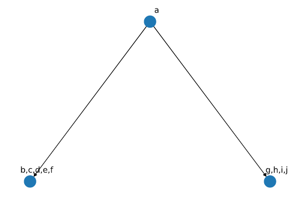

Comparing MLTED, RF distance, and TreeVec
MLTED
|  | |
|---|---|
| Tree 1 | Tree 2 |
| Tree 3 | Tree 4 |
| Tree 5 | Tree 6 |
On comparision of tree 1 with tree3 and 4, the output from MLTED was 100% similarity and 0 edit distance with the normalized output as 1. Even though Tree(1) as only three nodes while others have many more. It is because Tree(1) is lacking information which other trees have but there is no error in the output which needs to be corrected. When the comparison is made between Tree(2) and Tree(1, 3, 4), edit distance of 14 was found in each case and similarity of 3 because only three nodes are common (a, b, c) in any pair and Tree(2) on the one hand is projecting taxa(b, c, d) as independent (parallel) while in other trees these three mutations happens simultaneously. Tree(5) deals with the condition when one tree shows different order of mutation than the other, while Tree(6) addons to Tree(5) by replacing the root with some other elements.
- Tree(5)
- With Tree(1) 100% similarity(of 10), as already described.
- Tree(2) Similarity of 3, as already described.
- Tree(3) Similarity of 9, and edit distance of 2. It is because 9 nodes are in correct position out of 10 (h is not in). 1 distance is required to remove h, and other to add it as child of g.
- Tree(4) Similarity of 4, as we have shuffled nodes.
- Tree(6)
-
With Tree(1)
Similarity of 8 and distance of 4,
- 1 to remove a from b node.
- 1 to remove g from the b node.
- 1 to add b as child of a.
- 1 to add g as child of a.
-
The final score can be calculated in two ways, $\frac{similarity}{num_nodes}$, or $\frac{edit_distance}{2*num_nodes}$.
RF metric,
It is implied by sum of two terms, A+B where A represents number of partition of data implied by $T_1$ but not $T_2$, while B represents versa. RF metric ensures that we have exact ordering of taxas in tree whereas MLTED only ensured that nodes(can contain multiple taxas) are in correct order. It is not possible to compare the trees present in the above tables, as RF metric requires same set of leaf nodes in the tree. Therefore, table given below will help in better understanding of RF metric.
| Tree 1 | Tree 2 |
| Tree 3 | Edges Labelled |
In RF distance, we are required to calculate the sum of splits which are present in tree 1 but not tree 2 and vice versa. Therefore using the edge labelling (in red color). We define split of each tree (q split is not required as it would be same as that of x) as
| Tree 1 | Tree 2 | Tree 3 |
|---|---|---|
| C(x)ABD | C(x)ABD | B(x)ACD |
| D(y)ABC | B(y)ADC | C(y)ABD |
| B(z)ACD | D(z)ACB | D(z)ACB |
| A(r)BCD | A(r)BCD | A(r)BCD |
| BD(p)AC | BD(p)AC | CD(p)AB |
The splits between Tree(1) and Tree(2) as it does not matter which branch splits it because of being unrooted. While there are two unique splits in case of Tree(3) and Tree(1) or Tree(2). Thus, RF distance would be 2 in this case. If needed normalization then it is done by dividing it with total number of splits presents in both of the tree. Therotically, we are not bounded by comparing tree which does not have same number of leaves but tools does not allow.
TreeVec
It is also a metric for unrooted tree, and is primarly to pool different taxas based on their context. Basically, if the tree has leaf nodes as ${a_1, a_2, b_1, b_2}$. It implies $a_1, a_2$ belongs to category a while $b_1, b_2$ belongs to category b. No other method can help in this case. So, this method is very trivial.
Calculates minimum depth from root(can be assigned to any node) to pair of leaf nodes.
Take mean of all depths for all categories.
Compute Eucledian distance between all of the categories for all of the trees.
| Tree(1) | Tree(2) |
In this example, there are no examples in the subcategories.Minimum depth for each pair of the nodes is presented in the table below.
| Pair | Tree(1) | Tree(2) |
|---|---|---|
| $a \to b$ | 0 | 1 |
| $a \to c$ | 0 | 2 |
| $a \to d$ | 0 | 2 |
| $a \to e$ | 0 | 0 |
| $b \to c$ | 1 | 1 |
| $b \to d$ | 1 | 1 |
| $b \to e$ | 1 | 0 |
| $c \to d$ | 2 | 3 |
| $c \to e$ | 2 | 0 |
| $d \to e$ | 3 | 0 |
Thus, final distance is calculated between these two vectors (eucleadian in this example), 4.89.